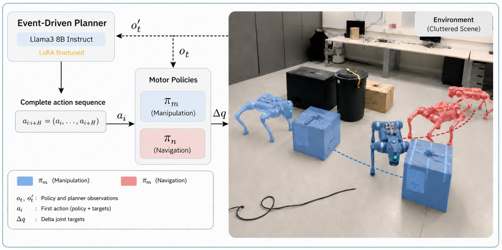

Submitted to CoRL 2026 (under review).
The non-discretized data can be downloaded from the link below. The code opens a 2D PyGame environment that visualizes the trajectories. Use "Up" and "Down" keys to switch between trajectories, "Right" and "Left" to progress the states for multi-state trajectories.
The deployment of robotic systems in real-world environments with minimal external intervention remains challenging due to disturbances and uncertainties that can alter scene semantics, compromising task execution. As a step towards addressing this challenge, we propose a planar loco-manipulation framework -navigation and object pushing -that enables quadruped robots to reason about and act on their environments to achieve task-specific objectives. At the high level, the framework integrates a fine-tuned LLM-based task planner that, starting from a written task description, switches between planar navigation and manipulation skills trained with model-free reinforcement learning. The planner is trained on synthetically generated data and demonstrates robust action planning under environment disturbances. The proposed data generation pipeline provides a scalable method to generate scenes and demonstrations for diverse cases, reducing reliance on expensive real-world data collection. At the low level, we introduce an end-to-end whole-body planar manipulation policy that exhibits adaptive and natural interaction behaviors. We validate the complete framework across diverse robot-centric loco-manipulation tasks in unstructured environments. Additionally, we demonstrate that the proposed manipulation policy outperforms the conventional hierarchical approach, reducing task completion time by more than 60%.

Overview of the proposed planar loco-manipulation framework.
We generate synthetic training data in a 2D environment and apply targeted augmentation to efficiently expand the dataset. An LLM-based task planner is fine-tuned on this data to enable structured decision-making under varying scene configurations. At the low level, we study the behavioral differences between hierarchical and end-to-end loco-manipulation policies, motivating the design of our control stack. Consequently, we introduce a specialized end-to-end manipulation policy that exhibits adaptive and natural interaction behaviors in real-world settings.
Real-world execution of the full loco-manipulation framework across diverse tasks.